События
СобытияВсе события: когда, где и как играть
В игре постоянно идут события. За каждое дают награды — и тебе, и альянсу. Здесь каждое событие разобрано отдельно: что это, когда проходит, куда нажать и как не слить войска.
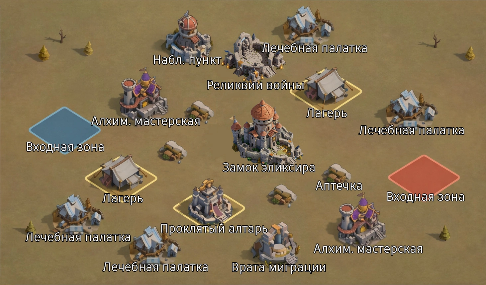
Особые события
Кнопка справа вверху. Внутри: Битва на выживание, Гонка за эликсиром, Викторина, Король демонов, Поиск вора, Сырная ловушка.

Каждый день
Король демонов (кроме воскресенья) и Битва на выживание. Делай их всегда.
Сырная ловушка
Раз в 2 дня. Время назначают R4 или R5 альянса.

Штурм
Во многих событиях монстра бьют штурмом: один начинает, остальные нажимают «Присоединиться».
Все события на одной странице
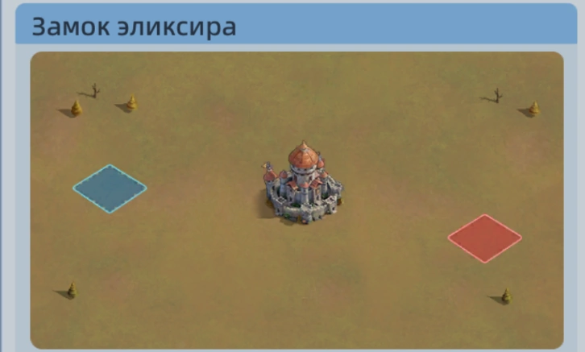
Гонка за эликсиром
по записи, 30 минутАльянс против альянса, 20 на 20. Захват зданий на отдельной карте.

Поиск вора
2 дня, раз в 2 неделиВместо скверны ловишь золотых воров и бьёшь их главаря штурмом.
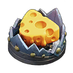
Сырная ловушка
раз в 2 дня, 30 минутАльянс ловит Крысу в ловушку и бьёт её штурмами.
Король демонов
каждый день, кроме ВсМировой босс: 10 ударов в день. Даёт серверу очки КвК.

Битва на выживание
каждый деньРаунды по 4 часа со своей темой. Соревнуешься с игроками своего уровня.

Викторина
по расписанию игрыВопросы про игру. Ниже — готовые ответы.

Долина Кристальных Гроздей
воскресенье, 4 разаСобирай кристаллы: бей крыс и копай шахты. В конце — «царь горы».

Охотничий бой
по команде R4/R55 волн скверны с боссом после каждой волны.
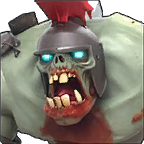
Блуждающий фантом
1 деньБить огромную Блуждающую скверну, которая гуляет по карте.
Опыт пандемии
3 дняУбить 30 сиделок от 1 до 30 уровня и Докторов-крыс альянсом.
Осада нежити
по команде R4/R5Волны монстров атакуют твой город. Щиты не работают.

Завоевание каньона
по расписаниюЗаписался — и бои идут сами. 3 линии, нужно выиграть 2.

Улучшение снаряжения
суббота и воскресеньеУлучшай снаряжение героев — получай награду.
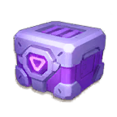
Торговец-отшельник
7 днейМагазин за монеты события. Первый товар всегда бесплатный.

Война королевств (КвК)
суббота 17:00 МСКНаш сервер против чужого. Отдельный раздел.

Дуэль альянсов
пн — сбАльянс против альянса, 6 тем. Отдельный раздел.
Гонка за эликсиром
Два альянса по 20 человек попадают на отдельную карту. Захватываешь здания — капают очки. Через 30 минут побеждает тот, у кого больше очков. Солдаты здесь не погибают: после боя все войска возвращаются как были. Победа во время КвК даёт нашему серверу 50 000 очков.
Как попасть
Лидеры альянса выбирают 20 основных участников и 10 запасных. Основные заходят первыми. После записи список закрывается. Обычно заявки собирают до четверга.
Пригодятся, если лечебных палаток не хватит.
Справа вверху «Особые события» → «Гонка за эликсиром». Тебя перенесёт на карту в свою зону: наши — синие, враги — красные. В своей зоне тебя не трогают.
Соперника игра подбирает по общей мощи записанных участников (берётся самая большая мощь, какая у них когда-либо была).
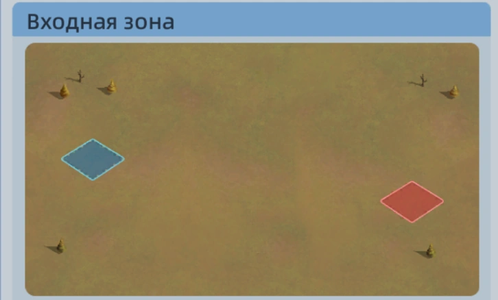
Что происходит по минутам
Заходим в свои зоны. Нас никто не может атаковать.
Открыты Алхимические мастерские, Врата миграции, Наблюдательный пункт, Лечебные палатки.
В центре открываются Замок эликсира, Руины войны, Проклятый алтарь.
Появляются Лагеря с травами — сбор тоже даёт очки.
Что дают здания
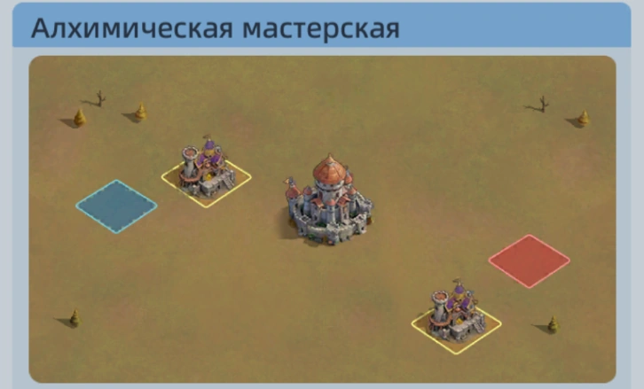
Алхимическая мастерская
Две штуки, у входов каждого альянса. Дают много очков постоянно — берём первыми.
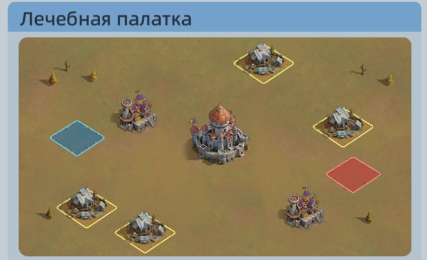
Лечебная палатка
4 штуки. Немного очков, но главное — лечит 15 твоих раненых каждые 10 секунд. Вылеченных забирай слева внизу, нажимая зелёную кнопку.
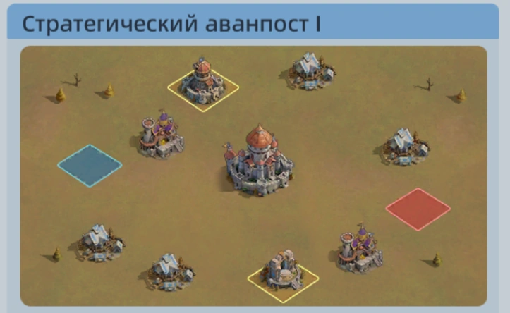
Врата миграции и Наблюдательный пункт
Врата — переезд по карте в 2 раза чаще. Наблюдательный пункт — +10% очков нашему альянсу.
Замок эликсира
В центре, открывается на 10-й минуте. Даёт больше всего очков. К 10-й минуте все сильные должны быть у центра.
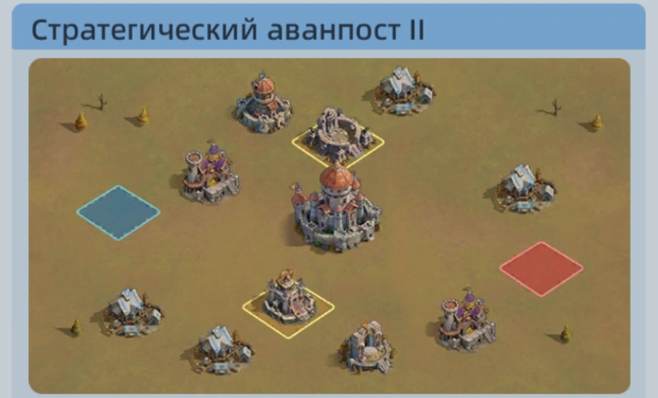
Руины войны и Проклятый алтарь
Руины — +15% к атаке, защите и здоровью наших героев. Алтарь — −15% всем героям врага. Если враг сильнее, алтарь — наш главный шанс.
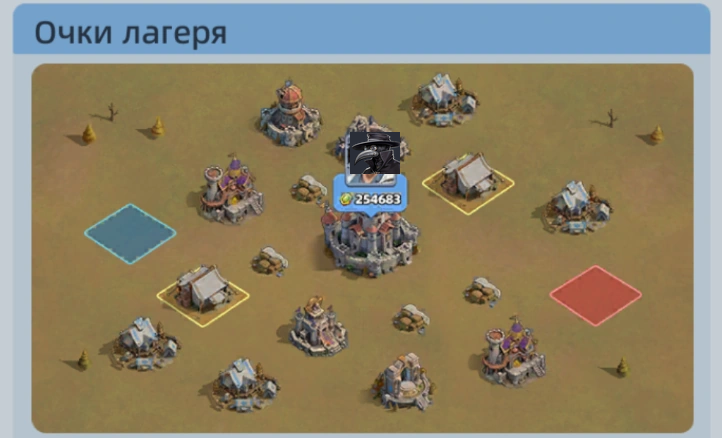
Лагеря и аптечки
С 13-й минуты отправляй самые слабые отряды в лагеря за травами — это очки. Вокруг захваченных зданий появляются аптечки — подбирать их тоже дают очки.
Тактика — как выиграть
Серое здание — ничьё: просто отправь отряд. Красное — вражеское: сначала выбей их штурмом. Одиночная атака на занятое здание сливает войска.
Чем больше наших отрядов внутри, тем сложнее врагу его отбить.
Команда 1: Алхимическая мастерская, Врата миграции, с 10-й минуты — Замок эликсира. Команда 2: Лечебные палатки (держать хотя бы 2 из 4) и Проклятый алтарь. Если нас 15 и больше — третья команда жжёт города врага.
Не ставь лечение на всё сразу: лечи столько, сколько закроют твои ускорения, иначе они зависнут.

Главная хитрость — жечь города врага.
У каждого города в событии прочность 5 000. Каждая удачная атака снимает 1 000. После 5 атак город врага улетает на его базу — вместе со всеми его отрядами. Если он держал здание, его отряды оттуда исчезают, и здание можно занять без боя.
Почти никто не держит войска на стене, поэтому даже слабый игрок может «сжечь» сильного. Переезд по карте — раз в 3 минуты, и сожжённый игрок ждёт, пока мы набираем очки.
Поиск вора
Два дня вместо скверны на карте появляются золотые воры. Ты ловишь их — получаешь львиные монеты и тратишь в магазине события. Здесь же хорошие награды для Ворона: эссенция и снаряжение.
«Особые события» → «Поиск вора». В окне есть поиск ближайшего вора — нажми, и игра покажет, куда идти.
Отправляй на них отряды. Воры бывают разного уровня — бери тех, кто тебе по силам.
После нескольких пойманных воров может появиться главарь. Он намного сильнее — бейте его вместе. Рейтинг события считают по урону главарю.
Награды за рейтинг приходят на почту после конца события. Награду за участие получают все.
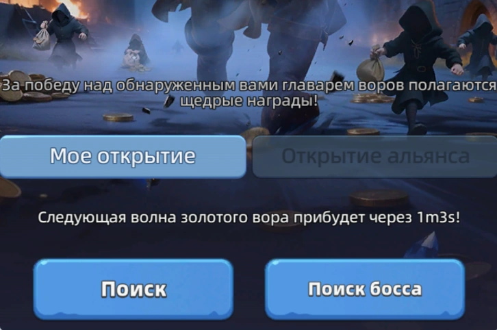
Сырная ловушка
Альянс ставит ловушку с сыром, в неё попадается Крыса-вор, и все бьют её штурмами. Чем больше урона — тем лучше награды каждому и всему альянсу. Хороший источник противоядия и материалов Ворона.
Как это устроено
R4 или R5 выбирают ловушку I или II, уровень и время начала. Выбрали одну — вторая блокируется. Нужно минимум 20 участников. Если не назначить до 22:00 по игре (03:00 МСК) в последний день — ловушка пропадёт.
Нажми на ловушку → «Взнос». За это ты получаешь монеты альянса, а ловушка — больше урона. До лимита усиление растёт, после — дают только монеты.
Крыса попадается, и у альянса 30 минут. Бить её можно только штурмами.
У Крысы 5 фаз, пятая бесконечная — бей, пока идёт время.
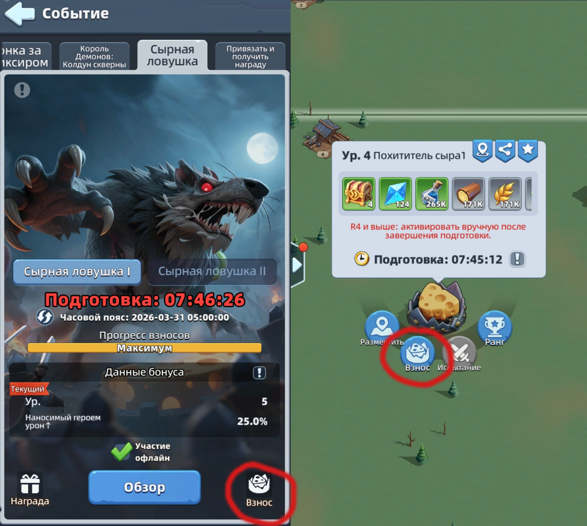
Тактика, которая даёт больше всего урона: создавай штурм своим самым слабым отрядом, а самым сильным присоединяйся к чужим штурмам. Так штурмов становится много, слабый отряд почти ничего не теряет, а сильный бьёт чаще.
Штурмы, которые начинают R4 (или их представитель), бьют Крысу сильнее. Если ты не в игре, твой самый сильный отряд сам вступит в штурм за 20 секунд до конца, если там есть место.
Личный урон
Нажми на ловушку → «Ранг»: видно, сколько урона нужно и сколько ты нанёс. Добил до нужной планки — получаешь в 10 раз больше наград.
Сложность
Каждый новый уровень Крысы примерно в 4 раза сложнее. Повышайте уровень с умом: войск теряется больше.
Лечение
После каждой атаки лечи войска, чтобы лазарет не переполнился. С помощью альянса это быстро.
Король демонов (мировой босс)
Босс на карте мира. Нужно Святилище 8 уровня и выше. 10 атак в день, штурмы нельзя — бьёшь только сам. Рейтинг дня считается по твоему самому сильному одному удару. За число атак тоже дают награды.
Король демонов не бьёт в ответ, поэтому танки против него не нужны — только урон.
| День | Король демонов | Бей героями |
|---|---|---|
| Пн, Чт | Колдун скверны | Воинами (+50%) |
| Вт, Пт | Рейнджер скверны | Колдунами (+50%) |
| Ср, Сб | Воин скверны | Рейнджерами (+50%) |
Как собрать отряд — в разделе Отряды → Король демонов.

Фишка: если твой отряд долго идёт куда-то далеко, отправь его в атаку на Короля демонов — путь до демона и обратно сократится до 30 секунд. Так можно быстро вернуть отряд домой.

Перед ударом разведай любую цель — включится «Боевое безумие», и удар будет сильнее. Проверь, что оно горит, и бей.
Во время КвК урон 200 лучших игроков сервера складывается. Сервер с большим уроном получает 250 000 очков.
Битва на выживание
Каждый день в 00:00 по игре (05:00 МСК) игра собирает тебя в группу с 12–20 игроками похожего уровня Святилища. Сутки поделены на раунды по 4 часа, у каждого своя тема. Набираешь очки темы — открываешь награды. 1-е место в группе во время КвК даёт серверу 2 200 очков.
| Тема раунда | За что дают очки |
|---|---|
 Усиление Ворона Усиление Ворона | 10 вороньих плодов — 1 очко; 1 энергия — 100 очков |
 Усиление героев Усиление героев | Найм героя — 400; каждые 1 950 противоядия — 1 |
 Развитие владений Развитие владений | 1 минута ускорения стройки — 10; +1 мощь здания — 1 |
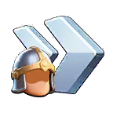 Обучение войск | 1 минута ускорения обучения — 10; 1 солдат — 22 |
 Исследование технологий Исследование технологий | 1 минута ускорения исследований — 10; +1 мощь технологий — 1 |
Совмещай с Дуэлью альянсов. Тратишь вещи дня Дуэли в раунд Битвы с той же темой — очки идут в оба события. Например, в понедельник корми Ворона именно в раунд «Усиление Ворона».

Не выполняй все задания Битвы каждый день без разбора — на Дуэль ничего не останется. В каждом раунде 4 награды, а за 2, 8 и 18 наград за день открываются дополнительные сундуки.
Ответы на вопросы Викторины
Ответы, которые засчитывает игра (собрали игроки). Нажми Ctrl+F и введи начало вопроса, чтобы быстро найти.

Два ответа про фракции здесь отличаются от того, как работает бой. В бою: Воины сильнее Колдунов, Колдуны сильнее Рейнджеров, Рейнджеры сильнее Воинов. А в Викторине отвечай так, как написано в таблице — так её засчитывает игра.
| Вопрос | Ответ |
|---|---|
| Как повысить мощность отряда после неудачной экспедиции? | Оба варианта |
| Что ограничивает уровень навыков героя? | Звёздный рейтинг героя |
| Какой интервал между двумя ежедневными получениями энергии? | 4 часа |
| Какие способы не повышают мощь отряда после поражения? | Нанять выживших |
| За что отвечает слот Каравана? | Численность отряда |
| Какая еженедельная тема Дуэли альянсов по понедельникам? | Усиление ворона |
| Что из перечисленного можно получить путём повышения? | Усиление клиники |
| Каково основное применение посоха чумного доктора? | Удерживать дистанцию от пациентов |
| Какова вероятность получения SSR-награды в найме героев? | 0.17 |
| Что произойдёт с заражёнными без своевременного лечения? | Скверна |
| Какой из перечисленных героев относится к качеству UR? | Селия |
| Артура (танк) следует размещать в тылу строя | Неверно |
| Количество солдат не ограничено | Неверно |
| Для чего нужно противоядие? | Улучшение и усиление героя |
| Как можно получить медные монеты? | Сбор в святилище |
| В какие дни событие Дуэль альянсов не проводится? | Воскресенье |
| Какова роль Ворона в игре? | Все перечисленное |
| Какова цель пожертвования Мышиной приманки в событии «Сырная ловушка»? | Повышает урон игрока |
| Какой особый наряд носили в Средние века для предотвращения Скверны? | Одеяние Чумного доктора |
| Против героев какой фракции Чернокнижники наиболее эффективны? | Воин |
| Как воинам передаётся скверна? | Укус блохи |
| На каком VIP-уровне открывается быстрое испытание в Битве экспедиции? | 8 |
| Какой класс у Шэдоу в игре? | Танк |
| Кто стоит за атаками чёрных крыс на город? | Чёрный маг |
| Кто виноват в тяжёлом ранении и заражении Селии? | Крысиный король |
| Где производится игровое Противоядие? | Мастерская противоядий |
| Сколько часов длится каждая Битва на выживание в игре? | 4 часа |
| Сколько минут длится Гонка за эликсиром? | 30 минут |
| На каком VIP-уровне открывается суперрежим Секретных операций? | 12 |
| Какая еженедельная тема Дуэли альянсов по средам? | Изучение технологии |
| Сколько секретных операций может одновременно выполнить каждая экспедиционная очередь? | 4 |
| Каковы преимущества высокого уровня казармы? | Увеличить лимит солдат |
| Какой цвет редкости снаряжения даёт наибольший прирост к мощи героя? | UR |
| Что является доказательством статуса мэра в игре? | Перстень-перчатка |
| Какие награды Заданий может улучшить выжившая Фрея? | Задание сокола |
| Для чего нужны Реликвии? | Оба варианта |
| Что ограничивает максимальный уровень героя? | Уровень святилища |
| Какие усиления не открываются с повышением VIP-уровня? | Улучшение характеристик солдат |
| Для чего используются предметы из Ткацкой мастерской? | Создание снаряжения |
| Против героев какой фракции сильны воины? | Рейнджер |
| Какое снаряжение производит Камень снаряжения? | Плавильный цех |
| Как подбирать героев для максимального урона при формировании строя? | 5 участников из одной фракции |
| К какой фракции принадлежит Марлена? | Воин |
| На каком VIP-уровне открывается автоотправка для Секретных операций? | 6 |
| Какие бонусы могут дать союзники по альянсу? | Оба варианта |
| Что делать при нехватке ресурсов для улучшения построек/технологий? | Все перечисленное |
| Занимает ли Тайная операция ячейку похода? | Нет |
| Что даёт казарма более высокого уровня? | Увеличивает вместимость казарм |
| Изучение технологии Дуэли альянсов повышает очки, получаемые в Дуэли альянсов | Верно |
| Какая еженедельная тема Дуэли альянсов по четвергам? | Усиление героев |
| Как улучшить награды, получаемые в Лагере исследователя? | Проходить больше этапов |
| Кто управляет чёрными крысами и нападает на город? | Чёрный маг |
Долина Кристальных Гроздей
По воскресеньям слева внизу на главном экране появляется кнопка в виде кристалла. Нажми её в нужное время — переместишься на карту события (твой замок окажется в случайном месте, переезд — бесплатно раз в 6 минут).
Для всех наград нужно минимум 150 000. Кристаллы дают за убитых крыс и за раскопки в шахтах. На 10, 11, 12, 20, 21 и 22 минутах появляются особые шахты — там копается быстрее.
За крыс ещё дают опыт для умений (кнопка с колбой слева внизу). Всего 10 умений, выучить можно половину — бери под свой стиль.
В центре открывается большая шахта. Кто её держит дольше — получает больше. Если не по силам — лучше докопай кристаллы до нормы. Если идёшь — двумя слабыми отрядами копай, одним атакуй.
Советы
- В первые минуты бей как можно больше крыс.
- Если отрядов не хватает на всё — хотя бы один на крыс, остальные в шахты.
- Войска здесь не погибают: 60% тяжелораненых, 0% погибших.
Остальные события
Охотничий бой
R4/R5 назначают время и сложность (9 уровней). После запуска 5 минут на подготовку, потом на карте волнами появляется скверна. Всего 5 волн, после каждой — босс, потом следующая волна сложнее.
- Кнопка события слева вверху быстро находит цель.
- Не бегите всем альянсом на одну цель.
- Лечите солдат между волнами.
- После 5-й волны заберите награду в «Особых событиях».
Блуждающий фантом
Длится 1 день. Нужно бить Блуждающую скверну — огромного монстра, который гуляет по карте. Есть личный рейтинг по урону.
Внизу окна события — список таких монстров на сервере, новые появляются каждые 10 минут. Не бей тех, кто тебе не по силам.
Опыт пандемии (сиделки)
Длится 3 дня. В начале выбираешь сложность. Задача — убить 30 сиделок, с 1 по 30 уровень (кнопка сиделок слева внизу во время события).
Чем больше игроков альянса убьют всех своих сиделок, тем больше уровней Доктора-крысы откроется для альянса — его бьют штурмами в назначенное R4/R5 время.
Если прошлый уровень дался с трудом — не повышай сложность, можно вообще не пройти.
Осада нежити
За задания сокола альянс копит «Тюремные улики». Набрали 300 000 — R4/R5 запускают событие (раз в 2 дня). На город каждого волнами нападают монстры, до 20 волн.
Щиты не работают. Твои отряды должны стоять на стене — прорвали оборону, и для тебя событие кончилось. Прорванные могут слать подкрепление другим.
Важно: перед днём набега в Дуэли отряды со стены убирают, а к Осаде нужно вернуть — не забудь.
Завоевание каньона
В «Особых событиях» справа вверху. От тебя нужно только записаться — лучше на центральную линию, лидеры сами переставят. Бои идут без твоего участия, 5 штук.
Сражаются топ-15 записанных на каждой линии, остальные просто получают награды. Чтобы победить, нужно выиграть 2 линии из 3.
Улучшение снаряжения
По субботам и воскресеньям (одна награда на два дня). Задача — улучшать снаряжение героев. Лёгкое и обязательное: копи камни снаряжения на выходные.
Торговец-отшельник
Магазин за монеты события. Монеты дают в соседней вкладке «Загадка отшельника»: карта из 15 заданий на 7 дней (ряд или столбец целиком — открывает сундук, все 15 — супер-сундук). Потом там же «Путь отшельника» — монеты за задания сокола, секретные операции и монстров.
- Первый товар всегда бесплатный, второй и третий — со скидкой.
- Магазин можно обновить ещё 8 раз в день: 2 бесплатно, потом +10 кристаллов за каждые 2 (всего 120). После каждого обновления — снова бесплатный товар.
- Самое ценное — сундуки для пробуждения героев и их оружия.
События первой недели нового игрока
Лечебное событие (7 дней): левая ветка наград — бесплатная, правая — платная. Битва на выживание открывается с 3-го дня. Финальный рассвет — нужно 4,6 млн мощи за неделю, бесплатным игрокам — забирать то, что получается.